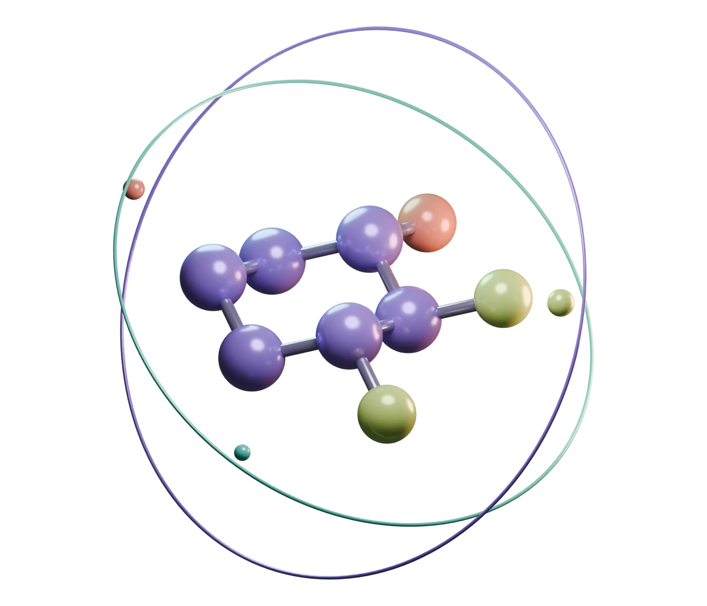

09-219 / ORGANIC CHEMISTRY I
Small atoms.
Big energy.
Chemistry looks better in three dimensions.
Grab a molecule. Flip a chair. Find your aha.

a little change in perspective.✳ a whole new understanding.PS 6c · THE ALL-EQUATORIAL CLUBA HANDS-ON COMPANION TO PROBLEM SET 3Scroll to experiment ↓
LESS STARING. MORE SPINNING.
Your molecular playground.
Building your molecule…
3D graphics are unavailable in this browser. The descriptions and 2D projections below are still available.
orbital.
Click an atom to get acquainted.
↔ Drag to orbit⊕ Scroll to zoom
CHANGE YOUR PERSPECTIVE
THE OTHER ANGLE2D ↔ 3D
GET TO KNOW YOUR ATOMS↗
CarbonOxygenNitrogenChlorineBromineHydrogen
Every ball is an atom. Every stick is a bond. R and S labels mark the configuration of a stereocenter. Click a ball for its identity and charge.
Idealized teaching geometry. Chair animations illustrate the change in conformation, not the physical transition pathway.
A FEW THINGS WORTH TAKING FOR A SPIN
The field guide.
01 / PERSPECTIVESame atoms.
Take the
Follow the charge.
R │ S
Same atoms.
Different handshake.
Mirror images can behave differently. Find out when a reflection makes a new molecule.
Explore stereochemistry ↗02 / CONFORMATION⌁
Take the
comfortable chair.
Watch axial and equatorial groups trade places, then meet a ring that refuses to flip.
Explore ring shapes ↗03 / ELECTRONSe⁻ ↝
Follow the charge.
Keep the atoms.
Resonance moves electrons through a fixed framework. The nuclei stay put.
Explore resonance ↗